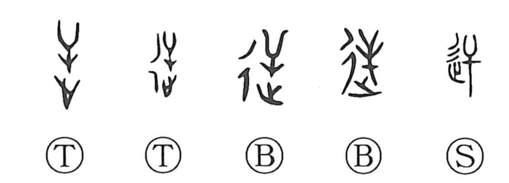

逆

Kun: saka, sakasa, sakarau, somuku | On: gyaku, geki
reverse ・ contrary ・ to oppose ・ to go against ・ to disobey
Explanation
逆 combines 辵, movement along a road, with the sound element 屰. 屰 is 大 turned upside down: a person with outspread limbs, seen as someone coming from the opposite direction. Going out along the road to meet that person gives the early sense ‘welcome’ or ‘go to meet.’
The inverted figure also provides reversal. What moves against the usual direction can be contrary to an established order, and 逆 comes to mean opposing, resisting, or disobeying. It can describe a thing upside down or an action contrary to what is proper. The old meeting and the later opposition share the movement toward something coming the other way.